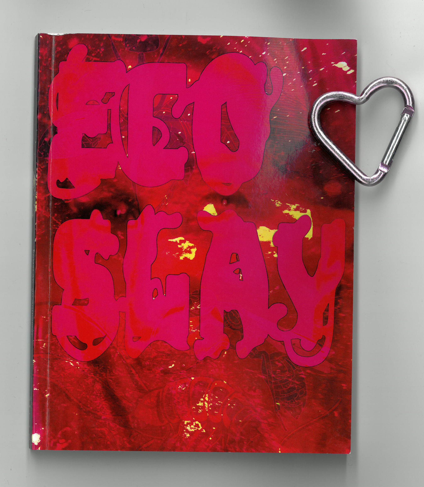

Ecoslay is both an organisation and a cultural movement operating at the intersection of art, science communication, and cultural practice. We use the language and tactics of pop culture to make ecosocial issues engaging, accessible, and to spark motivation in the current gloomy times. We thrive towards a collective regenerative society that protects the integrity of the people and the non-human world.
Ecoslay is not a fixed structure, but an evolving process: an experiment, a playground, and a shared inquiry. We invite anyone interested to take part in joining us to shape and experiment with this new cultural movement.
You can reach out to ecoslay at ecoslay@protonmail.com or via DM on instgram: @thats_ecoslay.

In 2025, we published the book Ecoslay: an Anthology. In this first publication, eight artists, researchers, and cultural workers provide their interpretation of Ecoslay through girlhood as a cultural force for environmental action.
Ecoslay – An Anthology with contributions by Janina Weißengruber, Nari Sarmini, paraCIR & Daniel H. Pineda, Ramona Gomez, Lisa Jäger, Camille Belmin, Diana Andrei, and Alokin Jaywalker.
Edited by Camille Belmin, designed by adO/Aptive (Janina Weißengruber and Daniel H. Pineda)